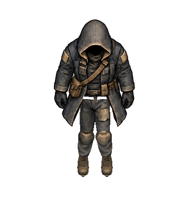
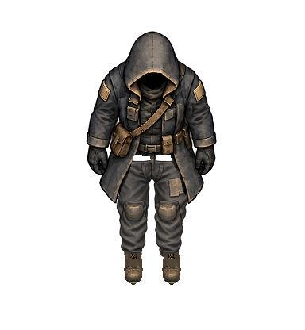

Canonical original

Native64px / half32px, exact aspect
Preserved pilot01

Native64px / half32px, exact aspect
Canonical identity02

Second preview, source-only, awaiting coordinator review. Runtime#245 canonical original-neutral identity repair. No new aesthetic method, hidden texture, family or scene acceptance.
Declared upper ownership:22,664pixels. Exact canonical RGBA inside, exact baggy garment/boots outside.198pixels change from pilot01, all inside ownership. Original strict identity, contact and alpha assertions remain unchanged and now pass. Pilot01 and its red log are preserved.


Source384x416, native64x69.333333, half32x34.666667. No rounding either display to64x69 or32x35. Root(192,336) remains unchanged. The original baggy front mesh and UV controls remain editable, with canonical upper bytes assigned after garment composition using exact replacement, never alpha-over.
Policy and replay / Source ownership policy / Ownership mask / Canonical derivative / Editable garment geometry/UV / Exact-aspect SVG comparison / 16-test evidence / Preserved red pilot01 log